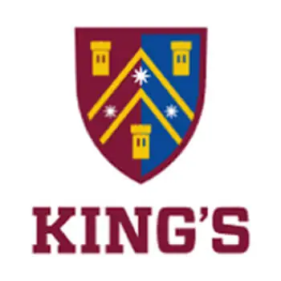

King's College is a secondary school located in Auckland, New Zealand.
This website provides important information for new students at King's College. It is designed to help you get started, find important resources, and understand what to expect.
King's College is known for its academic programs and extracurricular activities. The school encourages students to achieve excellence in academics, sports and leadership oppurtunities.